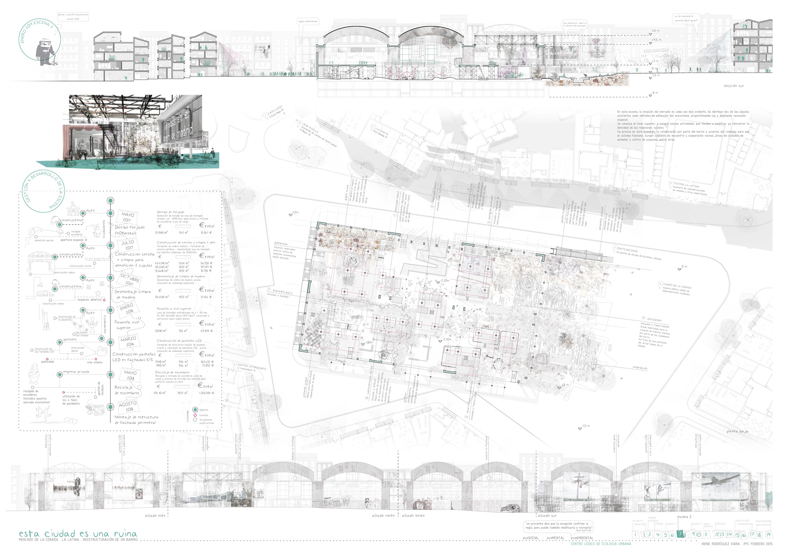
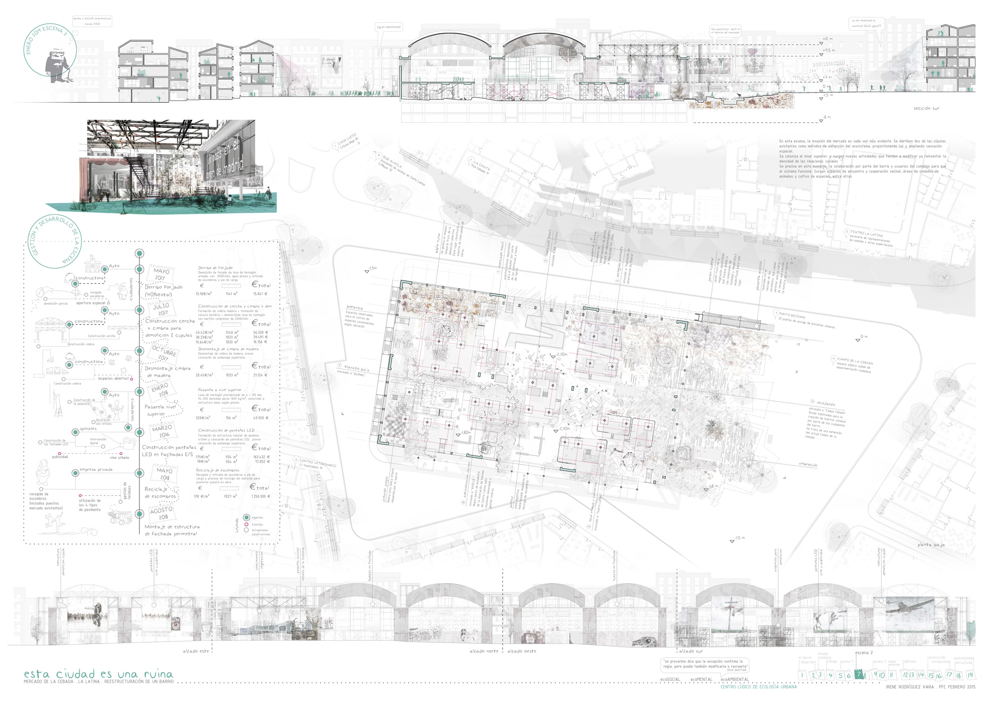
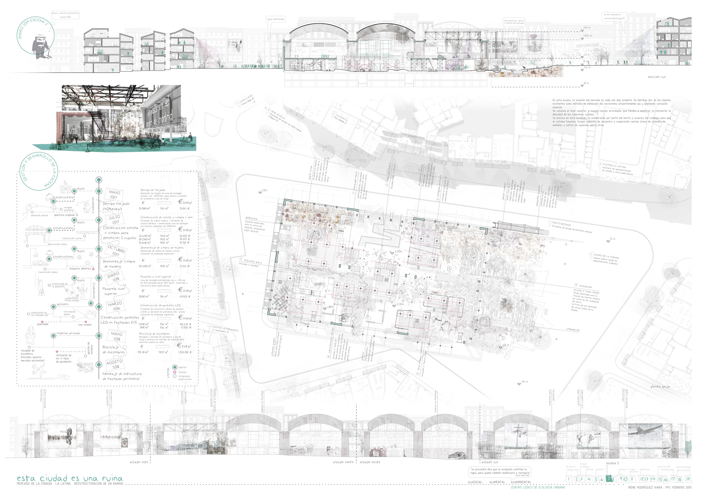

FINAL THESIS PROJECT . ESTA CIUDAD ES UNA RUINA
Project about the refurbishing and transformation of the Mercado de la Cebada in Madrid, an interesting development of the different cycles of construction along time and how these cycles can be interacting with the whole urban ecosystem.


 



Concerns about social, environmental and imaginative issues are translated successfully into architectonical systems in an inventive and integrative way. The ecological research through the project has been one of the high spots in the whole process.
Construction details.
Investigating differents kinds of constructive mechanisms, wich responds to each one of the generated spaces

Architecture like work-in-progress that should evolve and adapt to people's needs

Project developed by: Irene Rodríguez Vara
Project about the refurbishing and transformation of the Mercado de la Cebada in Madrid, an interesting development of the different cycles of construction along time and how these cycles can be interacting with the whole urban ecosystem.

Concerns about social, environmental and imaginative issues are translated successfully into architectonical systems in an inventive and integrative way. The ecological research through the project has been one of the high spots in the whole process.
Construction details. Investigating differents kinds of constructive mechanisms, wich responds to each one of the generated spaces
Architecture like work-in-progress that should evolve and adapt to people's needs